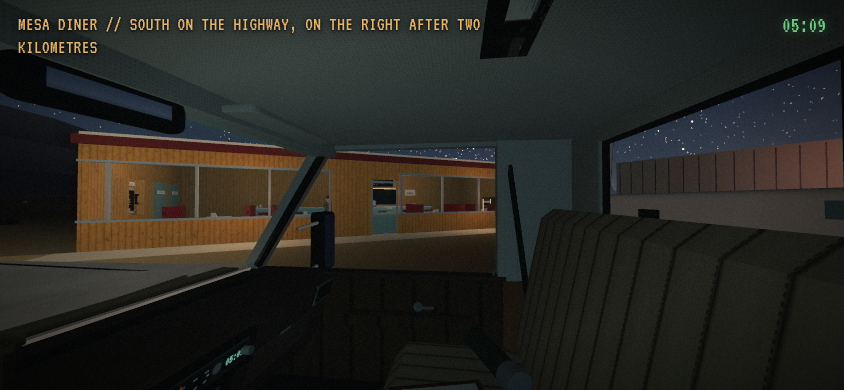
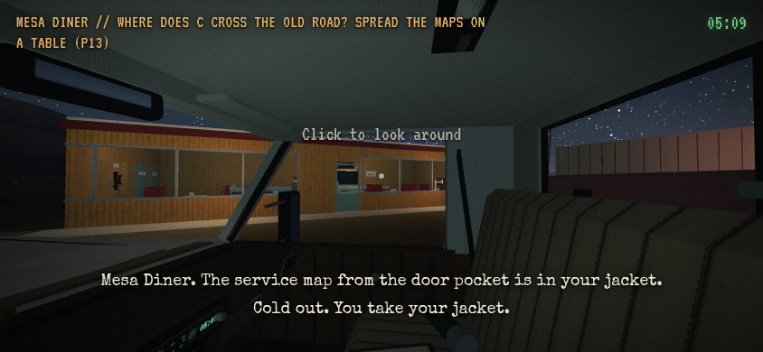
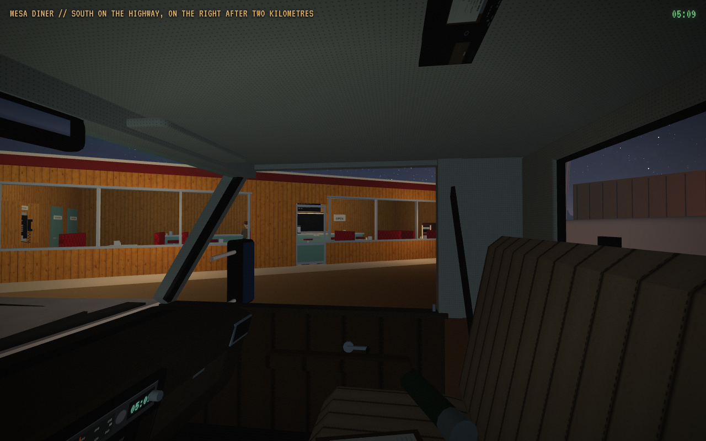
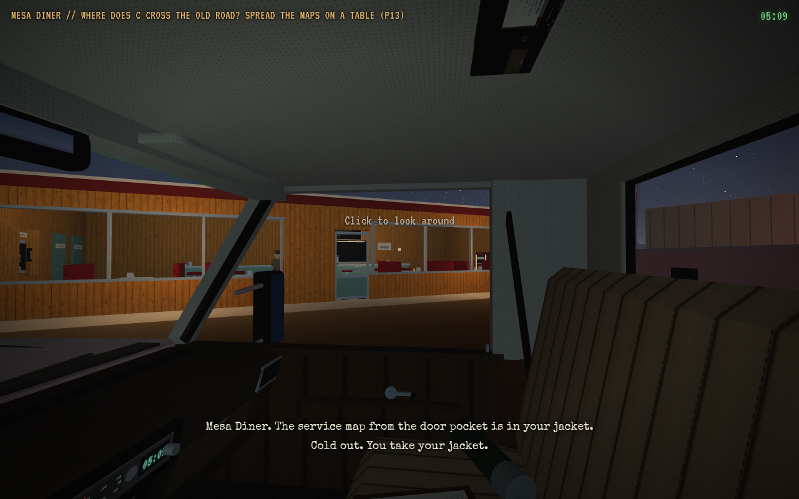
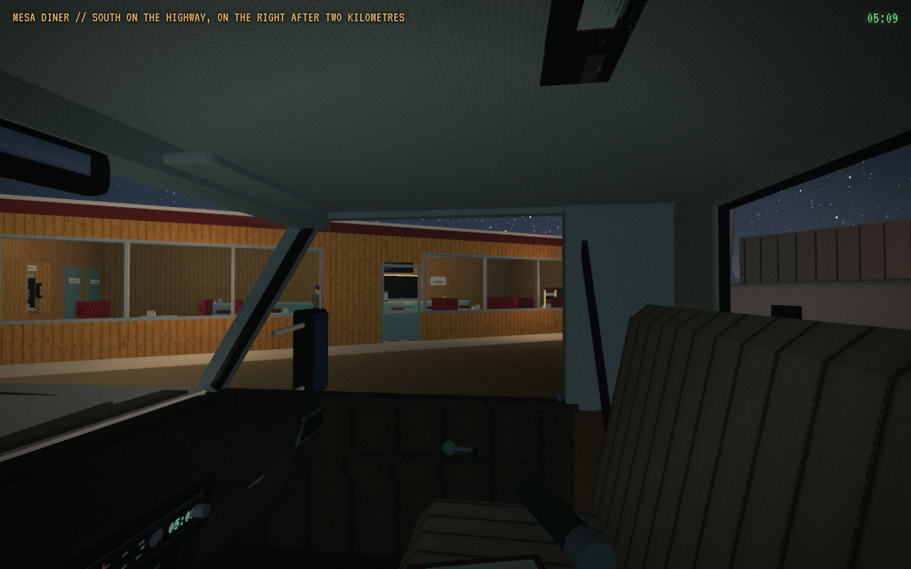
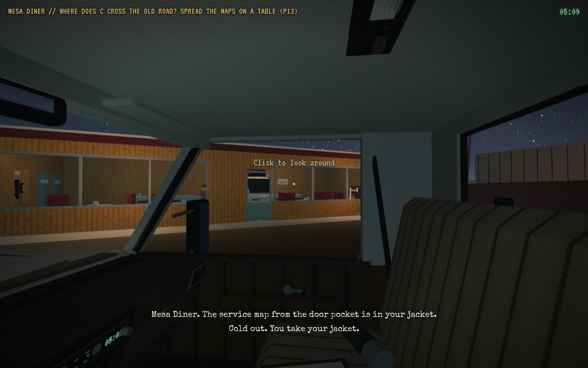
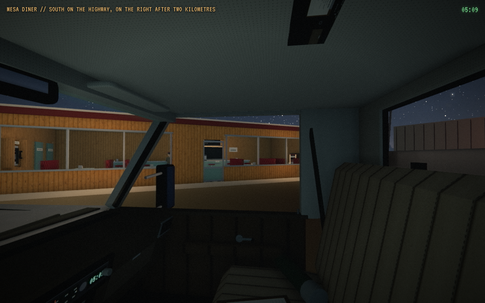
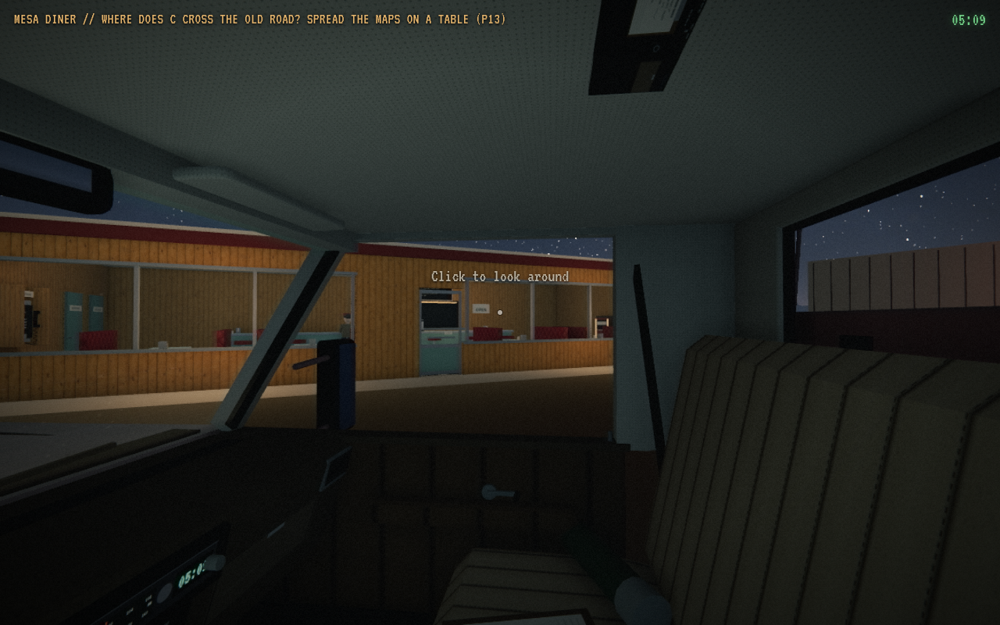

Lys ved dineren PACKAGED: 6/6 konfigurasjoner pakket med capture-integritet PASS. Ingen automatisk visuell eller gameplay PASS.
Alle integritetskontroller | Pakkemanifest og råfilhasher | Pages-tar og filhasher | Manuell review hvis skrevet | Manuell review-JSON hvis skrevet
low_844x390 Integritet PASS. Råmanifest | Kontaktark og originalbilder
high_844x390 Integritet PASS. Råmanifest | Kontaktark og originalbilder
ultra_844x390 Integritet PASS. Råmanifest | Kontaktark og originalbilder
low_1280x800 Integritet PASS. Råmanifest | Kontaktark og originalbilder
high_1280x800 Integritet PASS. Råmanifest | Kontaktark og originalbilder
ultra_1280x800 Integritet PASS. Råmanifest | Kontaktark og originalbilder
Fasade før og etter naturlig parkering Ulike spillklokker og lysstatus oppgis. Kamera etter parkering er en merket diagnose med gjenopprettet synlighet.
low_844x390 | prepark_facade_lights_on | arrival_drive | 05:09:38.5 | map XYZ [-7.31, 4.31, 2003.64] | path 2321.23 m | remaining 2.93 m | low/off | headlights True low_844x390 | parked_facade_lights_off | parked_cab_camera_diagnostic | 05:09:39.7 | map XYZ [-7.41, 4.31, 2003.78] | path 2321.41 m | remaining 2.76 m | low/off | headlights False 
high_844x390 | prepark_facade_lights_on | arrival_drive | 05:09:38.3 | map XYZ [-7.31, 4.31, 2003.64] | path 2321.23 m | remaining 2.93 m | high/vhs | headlights True 
high_844x390 | parked_facade_lights_off | parked_cab_camera_diagnostic | 05:09:39.4 | map XYZ [-7.41, 4.31, 2003.78] | path 2321.41 m | remaining 2.76 m | high/vhs | headlights False ultra_844x390 | prepark_facade_lights_on | arrival_drive | 05:09:38.0 | map XYZ [-7.31, 4.31, 2003.64] | path 2321.23 m | remaining 2.93 m | ultra/vhs | headlights True ultra_844x390 | parked_facade_lights_off | parked_cab_camera_diagnostic | 05:09:39.2 | map XYZ [-7.41, 4.31, 2003.78] | path 2321.41 m | remaining 2.76 m | ultra/vhs | headlights False 
low_1280x800 | prepark_facade_lights_on | arrival_drive | 05:09:38.3 | map XYZ [-7.31, 4.31, 2003.64] | path 2321.23 m | remaining 2.93 m | low/off | headlights True 
low_1280x800 | parked_facade_lights_off | parked_cab_camera_diagnostic | 05:09:39.4 | map XYZ [-7.41, 4.31, 2003.78] | path 2321.41 m | remaining 2.76 m | low/off | headlights False 
high_1280x800 | prepark_facade_lights_on | arrival_drive | 05:09:38.0 | map XYZ [-7.31, 4.31, 2003.64] | path 2321.23 m | remaining 2.93 m | high/vhs | headlights True 
high_1280x800 | parked_facade_lights_off | parked_cab_camera_diagnostic | 05:09:39.2 | map XYZ [-7.41, 4.31, 2003.78] | path 2321.41 m | remaining 2.76 m | high/vhs | headlights False 
ultra_1280x800 | prepark_facade_lights_on | arrival_drive | 05:09:39.3 | map XYZ [-7.31, 4.31, 2003.64] | path 2321.23 m | remaining 2.93 m | ultra/vhs | headlights True 
ultra_1280x800 | parked_facade_lights_off | parked_cab_camera_diagnostic | 05:09:40.5 | map XYZ [-7.41, 4.31, 2003.78] | path 2321.41 m | remaining 2.76 m | ultra/vhs | headlights False Dette kontrollerer observerte kodebytes, råbilder og metadata. Lyskandidater er mekaniske data, ikke en visuell dom. Lokal source-head er separat fra artefaktets kodebytes. Ekte GPU, fysisk telefon, manuell kjøring, lyd og fps er UNVERIFIED.